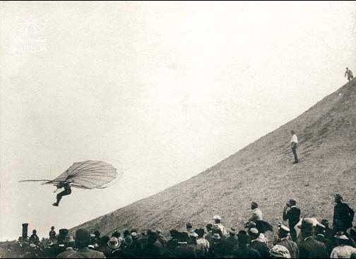

Historia de la aviación
La historia de la aviación se remonta al siglo XVIII, cuando los primeros globos aerostáticos fueron creados. Desde entonces, la aviación ha avanzado mucho y ha permitido la exploración de lugares remotos, el transporte de personas y mercancías, y mucho más.
Uno de los hitos más importantes en la historia de la aviación fue el primer vuelo de los hermanos Wright en 1903. Desde entonces, la aviación ha avanzado a pasos agigantados, con el desarrollo de aviones más grandes, más rápidos y más seguros.
Hoy en día, la aviación es una industria vital que conecta a personas y lugares de todo el mundo. Desde los vuelos comerciales hasta los aviones militares, la aviación ha transformado nuestra forma de vida y sigue evolucionando cada día.

A partir de entonces, las mejoras se fueron sucediendo, y cada vez se lograban mejoras sustanciales que ayudaron a desarrollar la aviación hasta tal y como la conocemos en la actualidad. Los diseñadores de aviones se siguen esforzando en mejorar continuamente las capacidades y características de estos, tales como su autonomía, velocidad, capacidad de carga, facilidad de maniobra o la seguridad, entre otros detalles. Las aeronaves han pasado a ser construidas de materiales cada vez menos densos y más resistentes. Anteriormente se hacían de madera, en la actualidad la gran mayoría de aeronaves emplea aluminio y materiales compuestos como principales materias primas en su producción. Recientemente, los ordenadores han contribuido mucho en el desarrollo de nuevas aeronaves .
Aparecieron los planeadores, máquinas capaces de sustentar el vuelo controlado durante algún tiempo. En 1799, George Cayley, un inventor inglés, diseñó un planeador relativamente moderno, que contaba con una cola para controlarlo, y un lugar donde el piloto se podía colocar, por debajo del centro de gravedad del aparato, dando así estabilidad a la aeronave. Cayley construyó un prototipo, que realizó sus primeros vuelos no tripulados en 1804. Durante las cinco décadas siguientes, trabajó en su prototipo, tiempo durante el cual Cayley dedujo muchas de las leyes básicas de la aerodinámica. En 1853, un ayudante de Cayley realizó un vuelo de corta duración subido al planeador, en Brompton (Inglaterra). George Cayley es considerado el fundador de la ciencia física de la aerodinámica, habiendo sido la primera persona que describió un aeronave de ala fija propulsada por motores.

En 1890, Clément Ader, un ingeniero francés, construyó un avión al que llamó Éole, equipado con un motor a vapor. Ader consiguió despegar en el Éole, pero no consiguió controlar el aparato, y solo pudo recorrer unos 50 metros en el aire. Aun así, consideró los resultados satisfactorios, y se planteó construir una aeronave mayor, cuya construcción le llevó cinco años de su vida. Pero por desgracia, su nuevo avión, denominado Avión III, era demasiado pesado y nunca fue capaz de despegar. En 1884 el ruso Aleksandr Mozhaiski diseñó y creó un monoplano con el que logró despegar gracias a un motor a vapor y recorrer una distancia de entre 20 y 30 metros. Máquina voladora de Hiram Stevens Maxim.